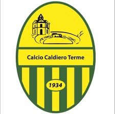

Caldiero Terme

Il Calcio Caldiero Terme, noto semplicemente come Caldiero Terme o Caldiero, è una società calcistica italiana con sede nel comune di Caldiero, in provincia di Verona. Milita per la prima volta nella propria storia in Serie C, terza serie del campionato italiano di calcio.
Storia
L'origine della tradizione sportiva del calcio a Caldiero è stata, per diverso tempo, avvolta da incertezza.
Per vari decenni si tese a considerare come data di fondazione del club il 18 ottobre 1945, attestata sulla stampa locale come giorno d'affiliazione del Gruppo Sportivo Caldiero alla FIGC. L'unica altra testimonianza conosciuta della presenza di una squadra con la predetta ragione sociale era una fotografia del 1940, che ritraeva la relativa formazione in maglia giallo-verde al vecchio stadio Marcantonio Bentegodi prima di un incontro valevole per la Coppa Arena, torneo amichevole che si disputava in primavera a Verona tra diverse squadre del territorio. Dal momento che tale coppa si svolgeva al termine della stagione regolare e non essendoci nelle cronache sportive coeve altri accenni a squadre caldieresi iscritte ai campionati, si postulò che fino al 1945 nessun club caldierese avesse calcato i campi nei campionati ufficiali